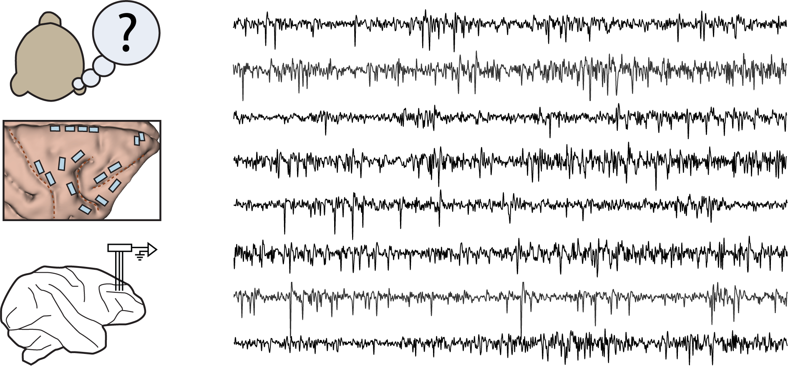

Laboratory of Cognitive Neural Systems

Our group seeks to explain how the brain generates our thoughts. Towards this goal, we study how cognitive functions arise from computations in neural systems, and how these computations are realized in biological processes in the brain.
Our overall approach is to develop hypotheses for specific cognitive algorithms, to formalize them using computer models, and to empirically test them using neural recordings and circuit perturbations during performance of challenging cognitive tasks.